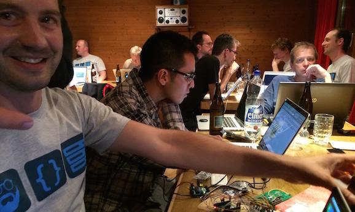
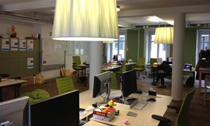

Senior Rails Engineer
In this position you have the opportinity to shape major parts of our frontend architecture and implementation. Our development is based on Rails and we combine a mix of agile practices, pair programming and code reviews to get things done.
Testing
We believe in testing and have an extensive test suite in place. Acceptance tests are written with Cucumber and Jenkins alerts us when tests are failing.
Team
As a small team, we believe we have constructed an environment that allows us to continue to adopt and develop cutting edge features. Join our highly motivated, open-minded team!
Apply today
No cover letter required. Simply send your CV and a link to your Github account or code examples to silvio.erni@local.ch.
Questions?
Questions about the job can be sent diretly to Georg Kunz, our engineer responsible for the open position.
Community
We take part in Switzerland's developer community. Our engineers regularly attend:
- Webtuesday
- Rails Hock
- JS Zurich
- Webmonday
- many conferences across Europe, e.g. Frozen Rails, Oredev, JSConf.eu, Berlin Buzzwords, FOWA, ...
Additionally we host a monthly Ruby Hack night in our office. 
What we offer
- Small and dedicated international team with start up character and a lot of freedom.
- Opportunity to take part in shaping our future technology stack.
- Interesting problems to solve over next years when we move beyond being a phonebook.
- Hackdays and fun projects.
- Powerful MacBook Pro (yes, we work with Macs).
- Office in Zurich, 2 minute walk from the main train station.
- Above average work conditions.
- Live and work in Switzerland, a wonderful country with one of the highest standards of living worldwide.
About local.ch
local.ch is Switzerland's phonebook directory. Available as printed phone book, online and on mobile devices. Our core competence is to bring people and businesses together.
With a total of 3 million unique visitors and around 14 million visits per month, local.ch is one of Switzerland's largest websites.
Place of work
local.ch ag, Konradstrasse 12
CH-8005 Zürich, Switzerland


Hackdays
From time to time we organise internal Hackdays where everyone can work on his/her own projects and ideas. We enjoy the freedom and the results at the end of the day are always amazing.
Read about our last Hackday (German only) »